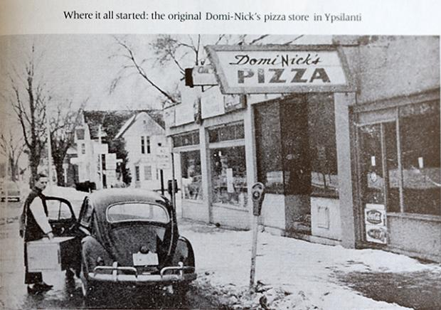

Making pizza since 1960

All about dominos
Tom Monaghan and his brother, James, purchase "DomiNick's," a pizza store in Ypsilanti, Mich. Monaghan borrowed $900 to buy the store.
James Monaghan trades his half of the business to Tom for a Volkswagen Beetle.
The first Domino's Pizza franchise store opens in Ypsilanti, Mich.
Company headquarters and commissary are destroyed by fire. The first Domino's store outside of Michigan opens in Burlington, Vt.
Amstar Corp., maker of Domino Sugar, institutes a trademark infringement lawsuit against Domino's Pizza.
Amstar Corp., maker of Domino Sugar, institutes a trademark infringement lawsuit against Domino's Pizza.
The 200th Domino's store opens.
Federal court rules Domino's Pizza did not infringe on the Domino Sugar trademark.
The 1,000th Domino's store opens.
Domino's first international store opens in Winnipeg, Canada.
The first Domino's store opens on the Australian continent, in Queensland, Australia.
Domino's first international store opens in Winnipeg, Canada.
The first Domino's store opens on the Australian continent, in Queensland, Australia.
Domino's opens 954 units, for a total of 2,841, making Domino's the fastest-growing pizza company in the country.
The first Domino's store opens in the United Kingdom, in Luton, England.
The first Domino's store opens on the continent of Asia, in Minato, Japan.
The first Domino's store opens in the United Kingdom, in Luton, England.
The first Domino's store opens on the continent of Asia, in Minato, Japan.
The first Domino's store opens on the South American continent, in Bogota, Colombia.
Pan Pizza, the company's first new product, is introduced.
Domino's opens its 5,000th store.
Domino's opens its 5,000th store.
Domino's Pizza signs its 1,000th franchise.
Domino's rolls out bread sticks, the company's first national nonpizza menu item.
Thin Crust pizza is rolled out nationwide.
The company discontinues the 30-minute guarantee and re-emphasizes the Total Satisfaction Guarantee: If for any reason you are dissatisfied with your Domino's Pizza dining experience, we will remake your pizza or refund your money.
The company discontinues the 30-minute guarantee and re-emphasizes the Total Satisfaction Guarantee: If for any reason you are dissatisfied with your Domino's Pizza dining experience, we will remake your pizza or refund your money.
Buffalo Wings are rolled out in all U.S. stores.
First store opens on African continent, in Cairo, Egypt.
Domino's Pizza International opens its 1,000th store.
Domino's Pizza International opens its 1,000th store.
Domino's launches its website (www.dominos.com).
Domino's rolls out flavored crusts, for limited-time-only promotions, nationally for the first time in company history.
The company reaches record sales of $2.8 billion system-wide in 1996.
Domino's rolls out flavored crusts, for limited-time-only promotions, nationally for the first time in company history.
The company reaches record sales of $2.8 billion system-wide in 1996.
Domino's Pizza opens its 1,500th store outside the United States, opening seven stores in one day on five continents simultaneously.
Domino's Pizza launches a campaign to update the company logo and store interiors with brighter colors and a newer look.
Domino's Pizza launches a campaign to update the company logo and store interiors with brighter colors and a newer look.
Domino's launches another industry innovation, Domino's HeatWave®, a hot bag using patented technology that keeps pizza oven-hot to the customer's door.
Domino's Pizza opens its 6,000th store in San Francisco, Calif., in April.
Domino's Pizza founder, Tom Monaghan, announces his retirement to pursue other interests, and gives up ownership of the company to Bain Capital Inc.
Domino's Pizza opens its 6,000th store in San Francisco, Calif., in April.
Domino's Pizza founder, Tom Monaghan, announces his retirement to pursue other interests, and gives up ownership of the company to Bain Capital Inc.
David A. Brandon is named chairman and chief executive officer of Domino's Pizza.
The company announces record results for 1999, with worldwide sales exceeding $3.36 billion. Revenues increased 4.4 percent over 1998.
The company announces record results for 1999, with worldwide sales exceeding $3.36 billion. Revenues increased 4.4 percent over 1998.
Domino's Pizza International opens its 2,000th store outside the United States.
Domino's Pizza celebrates 40 years of innovation and delivering pizza to homes around the world. During the past four decades, Domino's has paved the way for businesses involved in food delivery, employing practices that have set the standard in the industry.
Domino's Pizza announces record results for 2000. Worldwide sales exceed $3.54 billion. Revenues increased 5.3 percent over 1999.
Domino's Pizza celebrates 40 years of innovation and delivering pizza to homes around the world. During the past four decades, Domino's has paved the way for businesses involved in food delivery, employing practices that have set the standard in the industry.
Domino's Pizza announces record results for 2000. Worldwide sales exceed $3.54 billion. Revenues increased 5.3 percent over 1999.
Domino's 7,000th store opens in Brooklyn, N.Y.
Domino's introduces Cinna Stix®, a new permanent dessert item, to its menu.
Domino's launches "Get the Door. It's Domino's." advertising campaign.
Domino's launches two-year national partnership with the Make-A-Wish Foundation® of America.
Domino's introduces Cinna Stix®, a new permanent dessert item, to its menu.
Domino's launches "Get the Door. It's Domino's." advertising campaign.
Domino's launches two-year national partnership with the Make-A-Wish Foundation® of America.
In February 2002, Domino's Pizza acquires 82 franchised stores in the Phoenix, Ariz., market, making it the largest store acquisition in the company's history.
In August 2002, Domino's kickes delivery up a notch with the introduction of Domino's Pizza Buffalo Chicken Kickers™ and marks the creation of a whole new surprising category – premium chicken delivered right to the door!
In August 2002, Domino's kickes delivery up a notch with the introduction of Domino's Pizza Buffalo Chicken Kickers™ and marks the creation of a whole new surprising category – premium chicken delivered right to the door!
Domino's announces an exciting multi-year partnership by becoming the "Official Pizza of NASCAR."
Domino's is named Chain of the Year by Pizza Today magazine, a leading pizza trade publication.
Domino's combines two culinary classics – pizza and Philadelphia Cheese Steak – to create Domino's Philly Cheese Steak Pizza.
Domino's is named Chain of the Year by Pizza Today magazine, a leading pizza trade publication.
Domino's combines two culinary classics – pizza and Philadelphia Cheese Steak – to create Domino's Philly Cheese Steak Pizza.
Domino's announces a three-year partnership with St. Jude Children's Research Hospital. St. Jude was selected as Domino's "charity of choice" by franchise owners and team members.
Domino's launches Domino's Cheesy Dots™, delicious round balls of dough covered in a blend of zesty melted cheeses.
Domino's becomes an associate sponsor for the Drive for Diversity program, a minority driver development program designed to provide a steady pipeline of well-trained and supported minority drivers for the NASCAR circuit.
Domino's Pizza Inc., the recognized world leader in pizza delivery, becomes a publicly traded company on the New York Stock Exchange (NYSE) in July 2004, under the new ticker symbol DPZ.
Domino's launches Domino's Cheesy Dots™, delicious round balls of dough covered in a blend of zesty melted cheeses.
Domino's becomes an associate sponsor for the Drive for Diversity program, a minority driver development program designed to provide a steady pipeline of well-trained and supported minority drivers for the NASCAR circuit.
Domino's Pizza Inc., the recognized world leader in pizza delivery, becomes a publicly traded company on the New York Stock Exchange (NYSE) in July 2004, under the new ticker symbol DPZ.
Domino’s Pizza celebrates the completion of the three-year renovation of its World Resource Center in Ann Arbor, Mich. The renovation marks the first major improvement to the company’s world headquarters since Domino’s founder Tom Monaghan opened the
sprawling Domino’s Farms office complex.
Domino’s Pizza Australia opens its 400th store in Aspley, Brisbane.
Domino’s Pizza in the United Kingdom celebrates the opening of its 400th store in Wadsley Bridge, Sheffield.
Domino’s raises $1.2 million for St. Jude Children’s Research Hospital® during its second annual Thanks and Giving® campaign.
Domino’s Pizza efforts worldwide raise $220,000 to support southeast Asia tsunami relief efforts.
Domino’s Pizza launches its American Classic Cheeseburger Pizza in conjunction with its appearance as a featured task on the NBC hit reality show, “The Apprentice.”
Domino’s Pizza Australia opens its 400th store in Aspley, Brisbane.
Domino’s Pizza in the United Kingdom celebrates the opening of its 400th store in Wadsley Bridge, Sheffield.
Domino’s raises $1.2 million for St. Jude Children’s Research Hospital® during its second annual Thanks and Giving® campaign.
Domino’s Pizza efforts worldwide raise $220,000 to support southeast Asia tsunami relief efforts.
Domino’s Pizza launches its American Classic Cheeseburger Pizza in conjunction with its appearance as a featured task on the NBC hit reality show, “The Apprentice.”
Domino’s celebrates the opening of its 8,000th store with simultaneous celebrations of the opening of its 5,000th U.S. store in Huntley, Ill., and its 3,000th international store in Panama City, Panama.
Domino's indefinitely extends its relationship with St. Jude as its national charitable partner. Domino's raises $1.34 million for St. Jude during its third annual Thanks and Giving® campaign.
Domino’s Pizza introduces Brownie Squares — warm, delicious, bite-sized brownies delivered with a fudge dipping sauce.
Domino's indefinitely extends its relationship with St. Jude as its national charitable partner. Domino's raises $1.34 million for St. Jude during its third annual Thanks and Giving® campaign.
Domino’s Pizza introduces Brownie Squares — warm, delicious, bite-sized brownies delivered with a fudge dipping sauce.
Domino’s rolls out online and mobile ordering.
Domino’s introduces OREO® Dessert Pizza—a thin dessert-style crust that’s layered with vanilla sauce and covered with OREO® cookie crumbles and then topped with sweet icing.
Domino’s introduces its Veterans and Delivering the Dream franchising programs.
Domino’s is ranked in the Top 10 for the ninth time in Entrepreneur magazine’s annual listing of great franchise opportunities.
Domino’s introduces OREO® Dessert Pizza—a thin dessert-style crust that’s layered with vanilla sauce and covered with OREO® cookie crumbles and then topped with sweet icing.
Domino’s introduces its Veterans and Delivering the Dream franchising programs.
Domino’s is ranked in the Top 10 for the ninth time in Entrepreneur magazine’s annual listing of great franchise opportunities.
Domino’s becomes the largest sandwich delivery company overnight when it launches a line of oven baked sandwiches.
Domino's launches a food delivery industry first: Domino's Tracker™. This revolutionary technology allows Domino's Pizza customers to follow the progress of their order online, from the time they click the "Place Order" button (or hang up the telephone), until the order is delivered.
Domino's launches a food delivery industry first: Domino's Tracker™. This revolutionary technology allows Domino's Pizza customers to follow the progress of their order online, from the time they click the "Place Order" button (or hang up the telephone), until the order is delivered.
At year’s end, Domino’s scraps its 49-year-old pizza recipe and launches its “new and inspired pizza” with an unusual advertising campaign.
Domino’s introduces American Legends, a line of premium pizzas featuring toppings such as roasted red peppers, spinach and feta cheese.
Domino’s introduced Breadbowl Pasta and Chocolate Lava Crunch Cakes.
Domino’s introduces American Legends, a line of premium pizzas featuring toppings such as roasted red peppers, spinach and feta cheese.
Domino’s introduced Breadbowl Pasta and Chocolate Lava Crunch Cakes.
In March, Domino’s Pizza opens its 9,000th store worldwide, with dual celebrations in New Delhi, India and New Orleans, La.
Bain Capital sells its interests in Domino's Pizza.
Domino's raises $2.7 million during the 7th annual St. Jude Children's Research Hospital Thanks and Giving campaign, marking the largest single charitable donation in the company's 50-year history.
Domino’s Pizza celebrates its 50th anniversary in December.
Content from
Bain Capital sells its interests in Domino's Pizza.
Domino's raises $2.7 million during the 7th annual St. Jude Children's Research Hospital Thanks and Giving campaign, marking the largest single charitable donation in the company's 50-year history.
Domino’s Pizza celebrates its 50th anniversary in December.